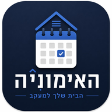

חזרה לאפליקציההמסמך מסביר איזה מידע האפליקציה שומרת, איפה, ומה בשליטתכם. הגרסה הזו של האפליקציה היא יומן אימונים אישי: אין בה חשבונות, אין התחברות ואין קהילה.
אין חברה מאחורי האפליקציה. היא מופעלת ישירות על ידי צוות המאמנים של המועדון עבור החברים שלו. לכל שאלה, בקשה או תלונה בנושא פרטיות — פנו למאמן/ת שלכם ישירות, כמו בכל נושא אחר במועדון.
כל מה שאתם רושמים נשמר בזיכרון של הדפדפן במכשיר עצמו. השם שאתם מזינים משמש רק לברכה במסך, ונשאר גם הוא במכשיר.
טעינת האפליקציה עצמה פונה לשרת שמארח אותה (GitHub Pages), כמו כל אתר: הדפדפן מבקש את קבצי האפליקציה, ולכן השרת רואה כתובת IP וסוג דפדפן. מה שהוא לא מקבל הוא מה שכתבתם.
כדי שהמועדון ידע כמה אנשים משתמשים באפליקציה וכמה מהם רושמים אימונים, האפליקציה שולחת שלושה סוגי עובדות בלבד: שהאפליקציה נפתחה, שנרשם אימון, ושנפתח מסך (רישום, התקדמות, לוח שנה או אימונים). כל עובדה נשלחת לכל היותר פעם ביום.
לכל עובדה מצורף רק מזהה אקראי שנוצר בטלפון שלכם בפעם הראשונה ונשמר בו. הוא לא נגזר מהשם, מהמכשיר או מכל פרט אחר, ומחיקת נתוני האתר בדפדפן יוצרת מזהה חדש. לא נשלחים שם, תוכן אימון, משקלים, הערות, מיקום או שעה — השרת רושם רק את התאריך.
המידע נשמר בשרת Supabase של המועדון (באזור ap-southeast-1,
סינגפור), ורק צוות המועדון יכול לראות אותו, כסיכום של מספרי מכשירים.
כמו כל אתר, השרת רואה בזמן הבקשה את כתובת ה־IP; היא לא נשמרת בטבלת
הספירה.
אפשר לכבות את זה בכל רגע: בהגדרות, "ספירת שימוש" ← "כבוי". מרגע הכיבוי לא נשלח דבר, והמזהה האקראי נמחק מהטלפון. האפליקציה עובדת בדיוק אותו דבר גם כשהספירה כבויה, וגם בלי חיבור לאינטרנט.
מכיוון שהנתונים נמצאים רק על המכשיר, הדרך לשמור עליהם היא קובץ גיבוי: בהגדרות, "ייצוא גיבוי" מוריד קובץ עם כל היומן לתיקיית ההורדות. הקובץ נשאר אצלכם — לא נשלח לשום מקום — ואפשר לשחזר ממנו בכל מכשיר דרך "ייבוא גיבוי". בטלפונים מסוימים הדפדפן עלול למחוק נתוני אתרים שלא נפתחו זמן רב, ולכן כדאי לשמור קובץ גיבוי מדי פעם.
אם תבחרו לשלוח דיווח על תקלה, הוא יוצא מהאפליקציה שלכם — בוואטסאפ או במייל — רק כשאתם שולחים אותו. לפני השליחה מוצגים לכם כל הפרטים הטכניים שיצורפו: גרסת האפליקציה, סוג הדפדפן ומצב החיבור — בלי השם שלכם ובלי יומן האימונים.
יומן האימונים נמצא אצלכם: אפשר לייצא אותו, לתקן כל רישום, ולמחוק הכול דרך "מחיקת כל הנתונים" בהגדרות. אין לנו עותק של יומן האימונים שלכם. את ספירת השימוש אפשר לכבות בהגדרות, והמזהה האקראי נמחק אז מהטלפון. ספירות שכבר נשלחו אינן מקושרות לשמכם או לשום פרט מזהה, ולכן גם אנחנו לא יכולים לדעת אילו מהן הגיעו מהמכשיר שלכם.
אם המדיניות תשתנה, התאריך בראש המסמך יתעדכן, ובמקום שנדרש תופיע גם הודעה בתוך האפליקציה.